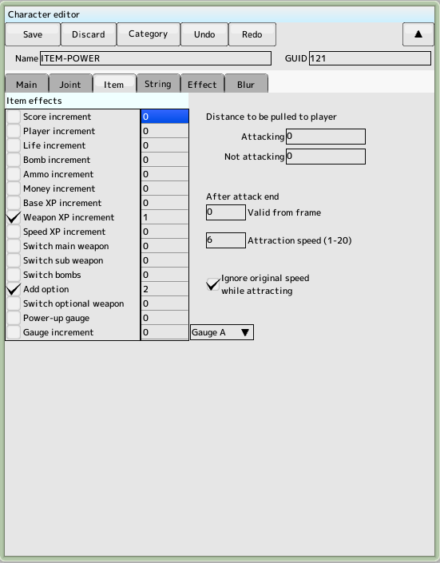

Item Tab

Set up the item character.
- Add score
Set the score to be added
- Add remaining player cards
Set the remaining player cards to be added
- Recover HP
Add HP
- Bomb recovery
Set the number of bombs to be added
- Weapon Recovery
Unused
- Money added
Unused
- Add weapon experience
Set the amount to increase the level of the weapon
- Speed Experience Added
Set the amount to increase the level of speed
- Switch main weapon
Set main weapon index
- Sub-weapon switching
Set sub-weapon index
- Bomber switching
Set the index of the bomber
- Add options
Specifies the number of options to add (decreasing by a negative number)
- Optional Weapon Switching
Sets the index of an optional weapon
- Power-up Gauge
Specifies the number of power-up gauges to increase
Weapon index and player editingThis is a number in the list of weapons
However, for main, sub and bomber weapons, they will be independent numbers.
For example, the list of weapons.
| Main Weapon A |
| Main Weapon B |
| Subweapon A |
| Main Weapon C |
| Subweapon B |
| Bomber |
then the index value of the main weapon is
- Main Weapon A → 0
- Main Weapon B → 1
- Main Weapon C → 2
and the index value of the sub-weapon is
- Subweapon A → 0
- Subweapon B → 1
and the bomber's index value is
- Bomber → 0
It will be
Attraction
When the distance to the ship is less than the specified value, it will start moving toward the ship
- Attack distance
Specifies how far your ship can be drawn during an attack
- Distance when not attacking
This is the distance your ship can attract while not attacking
- Specifies how long it takes to stop attacking and become non-attacking (not how long it takes to start attracting)
The decision to retrieve an item from your ship is made when the ship's attack judgment and the item's defense judgment intersect, and then it is released. The size of the hit is Make sure to allow for a large enough hit ratio.
 back to the original page
back to the original page